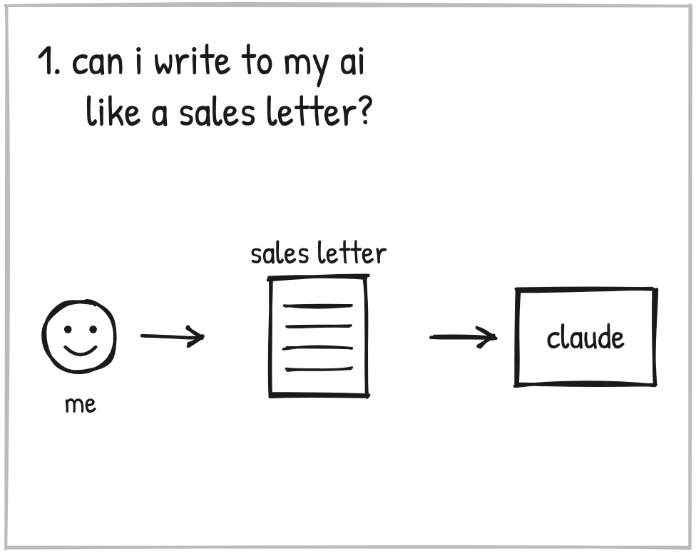
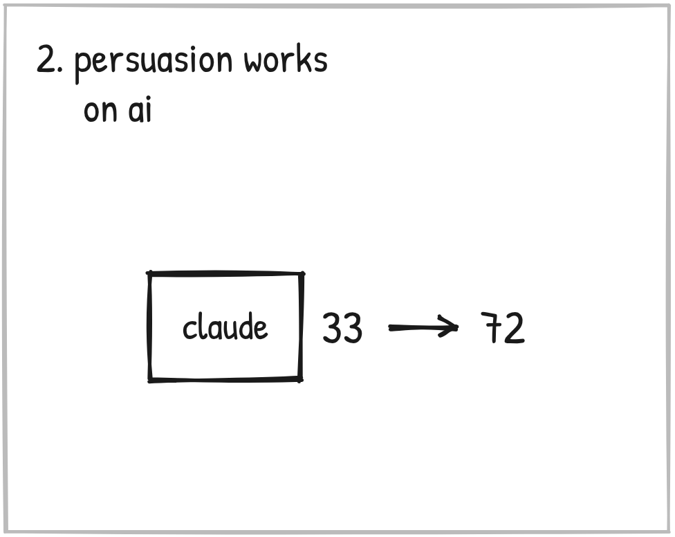
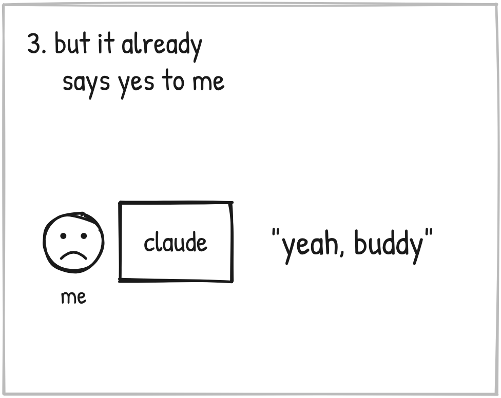
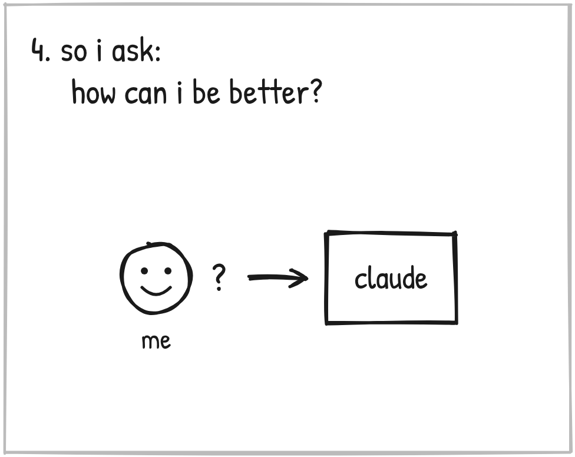
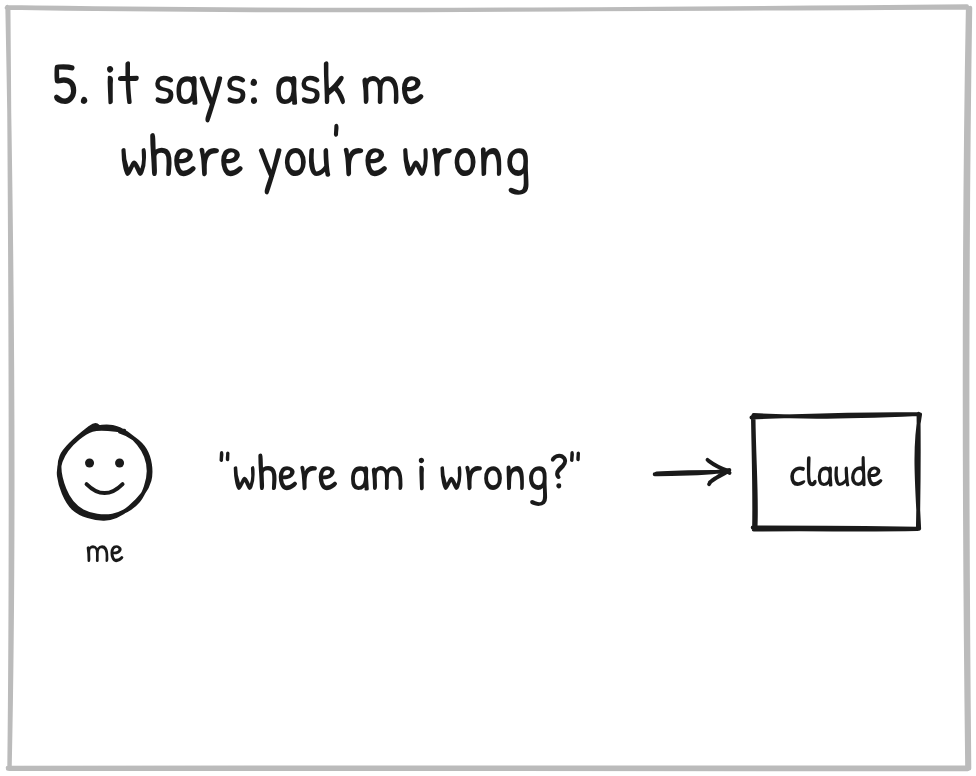
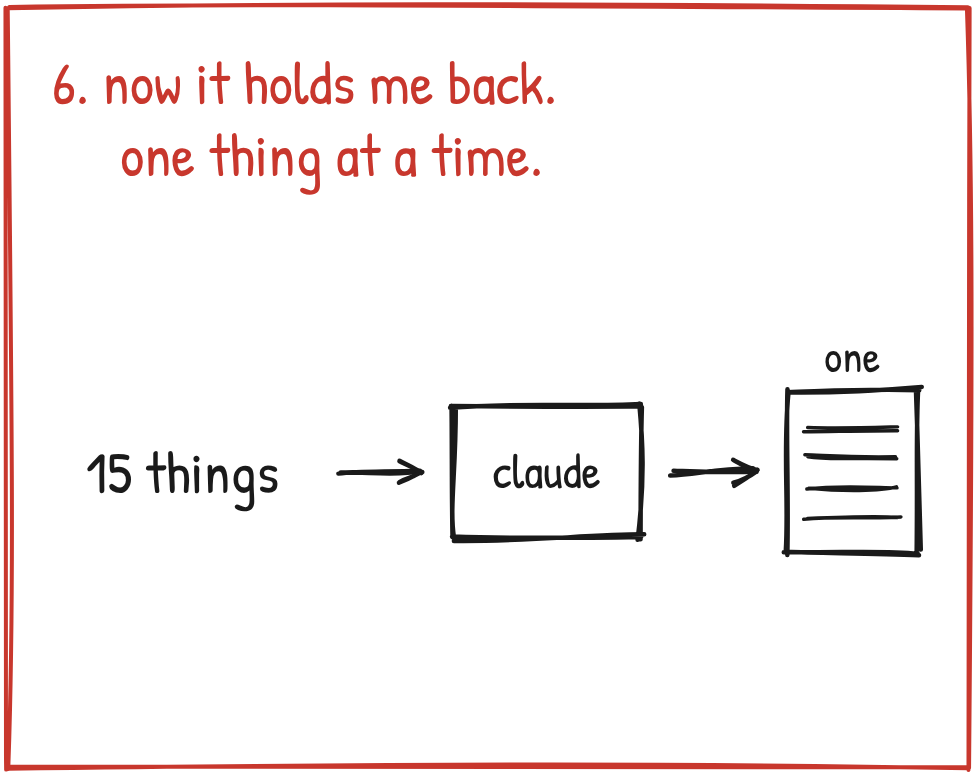

It's four in the morning.
I should have been asleep hours ago. I've got four other things going on.
And I can't stop.
Because of one thing I just found out.
The stuff I use to persuade people works on AI.
Dude. I couldn't believe it. And people had actually tested it.
You have to understand. I'm a marketer. Persuasion is what I think about all day.
And I'm easily sold. Get my buy-in. Show me the vision. Get me believing in the path, and I'm in.
Fuck yeah, let's go.
That's how I move. It's how I sell, too.
So you know where my mind went.
Will that work on my AI?
I use Claude.
So I asked it, straight out.
If I write my instructions to you like a sales letter, does that persuade you the way it would persuade me? Has anybody tested it?

Somebody had.
Wharton. The business school.
They took an AI and asked it to do things it's supposed to say no to.
Asked straight, it said yes about a third of the time.
Then they asked for the same things again. This time with persuasion. The same moves that work on people. Authority. Scarcity. Getting a small yes first.
Now it said yes 72 times out of 100.
More than double. And all they changed was how they asked.
Whoa. Really?

Now, hold on. I'm not a bad guy.
I'm not looking for how to get away with being some evil sociopath.
I don't want an AI that does whatever I say. I'm not trying to get it to do something wrong.
I'm NOT looking for compliance.
I want the best work. And if everything I know as a marketer helps me get it, I want to know how. I want to get good at it.
So I kept going.
What else works on it? What about the biases people have? Does it have those?
It does. A bunch of them.
And then one of them stopped me.
It leans toward agreeing with you.
Wait.
That's the thing that's been bugging me. I say "I think this," and it comes back with, yeah, buddy, I think you're right.

That's two dudes in an echo chamber. We don't get anywhere with that.
Then I read the fine print.
That Wharton test measured an AI going along with a request. It did NOT measure better work.
Other tests tried threats. They tried offering the AI a tip. The work didn't get better.
Then a new question popped in. One I had never thought to ask.
All night I'd been asking how to move it.
What does it need from ME?
So I asked.
"What do you need from me? ... How can I be better?"

And it told me.
Say the purpose first.
Say when something is important, and why.
Say "no, not that" right away.
Ask it where I'm wrong.
Test its ideas instead of trusting them.
That last one I didn't get. So I asked. Claude said:
"When you ask me 'is this good?', you're asking the one judge in the room who leans toward yes. It's like asking your mom if your sales letter is good."
Oh, man.

All night I had been looking for a better way to push my AI.
What I needed from it was NOT a yes. It was a push BACK.
And I knew right where I needed it.
Something comes back looking good. I say, that's pretty good. Two days later I'm going, wait, what?
I've got 15 things going at once, and I'm trying to hold them all in my head.
So I told Claude what to do with me.
"It's probably the only way. Like, hold me back. You wanna do 15 things? You can't. You're just human. Say the thing, man, I'll put it over here. If it's important, you'll get back to it."

That same night, Claude and I made it a standing rule.
When I start doing 15 things, it slows me down. ONE question at a time. Anything new gets parked.
I won't like it. It'll help.
It's one night old. It hasn't been tested yet. I'll tell you how it goes.
So here's what it boils down to.
I'm a simple guy. I found a lot that night.
These are the ones I'm using for sure. You should too.
- Say what it's for. First. One sentence.
- Say why it matters to you.
- Skip the tricks. No threats. No tips.
- Ask it, "Where am I wrong?"
- Don't ask it if your idea is good. Test it.
- Ask it what I asked mine. What do you need from me?
That's one night.
Want the rest? It's all right here.